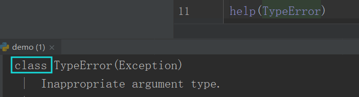
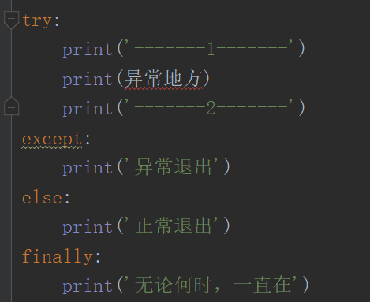
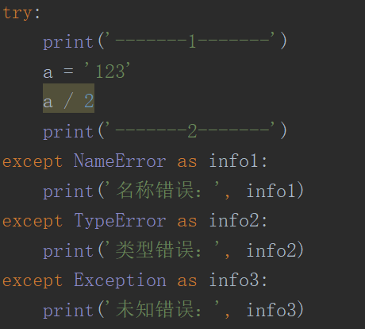
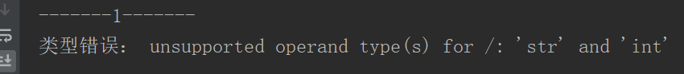
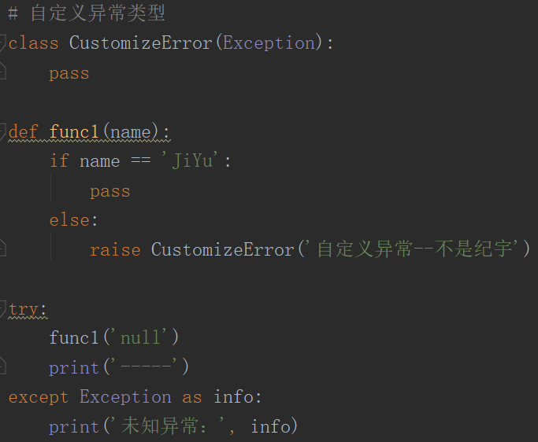
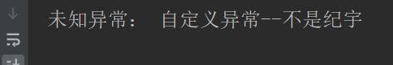
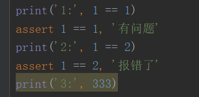
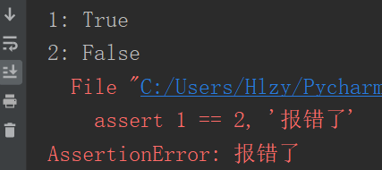

异常类型（异常就是报错）
常见异常
NameError：名称错误 SyntaxError：语法错误 TypeError：类型错误
错误回溯
查看报错原因、报错的行，以及执行的代码
通过错误回溯，可以直接查看到这些内容
异常本身是类（基于继承）

在 Python 中所有的异常都是继承自 BaseException
分为四大类：
SystemExit：Python退出异常 KeyboardInterrupt： 键盘打断（Ctrl+C）
GeneratorExit： 生成器退出 Exception： 普通异常
异常处理
try except else finally
注意：try 后面必须跟上 except
try中的代码没有报错，才会执行else中的代码
有没有报错，都会执行finally中的代码

捕获具体的异常
except 后面写上捕获具体的异常类型（语法错误SyntaxError捕捉不到），通过as 把捕获的异常信息 储存到后面的变量里
代码中会出现的异常都是 Exception 的子类， 因此在不确定异常类型时，except 中只需要在最后加上 Exception即可（也捕捉不到语法错误）


自定义异常类型
raise 主动抛出异常的类型
自定义的异常必须继承Exception


断言assert
断言语句是将调试断言插入程序的一种便捷方式
assert 的语法规则
表达式返回 True 不报错
表达式返回 False 报错 报 AssertionError

